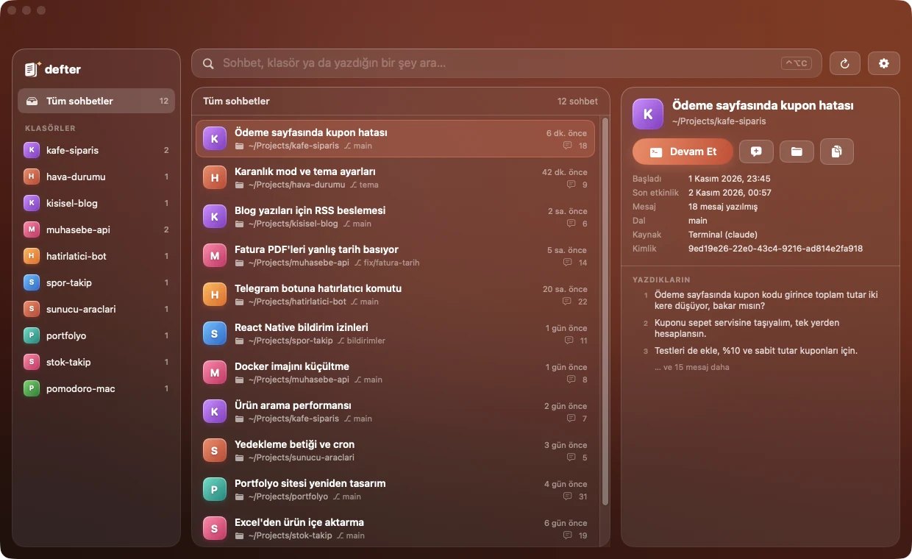
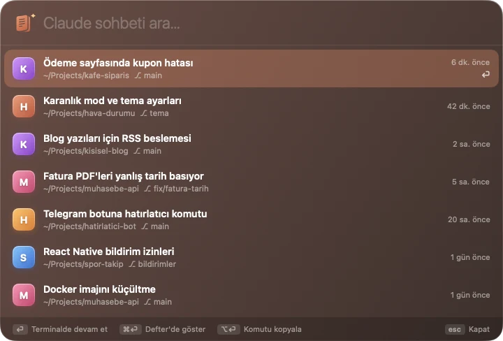
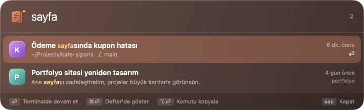
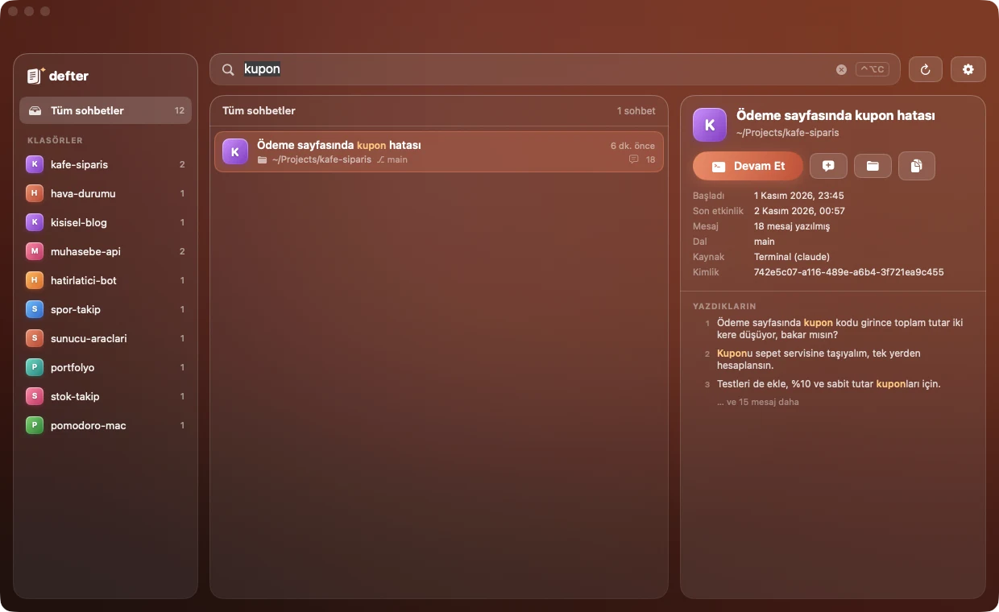

"O konuşmayı hangi klasörde yapmıştım?" sorusuna son. Defter, Claude Code sohbetlerini arar, hangi projede geçtiğini bulur ve tek tuşla terminalde kaldığın yerden devam ettirir.

Tarayıcıda, editörde, toplantıda… Kısayola bas, aklında kalan bir kelimeyi yaz, ⏎'ye bas. Sohbet iTerm2'de ya da Terminal'de, doğru klasörde açılır.


Çoğumuz claude'u ev klasöründe açıp sonra projeye geçeriz. Claude Code'un kendi listesi bu yüzden her şeyi tek yığında gösterir. Defter, sohbetin gerçekte hangi projede geçtiğini bulur ve onu o projenin altına koyar.
--resume oturumu ancak oradan bulur.
Defter, Claude Code'un zaten diskinde tuttuğu kayıtları (~/.claude/projects) yalnızca okur. Hiçbir şeyi değiştirmez, silmez, internete göndermez.
Kayıtlar ilk açılışta birkaç saniyede okunur; sonrasında yalnız yeni eklenenler okunduğu için arama anında sonuç verir.
Ağ bağlantısı kurmaz, analitik toplamaz, giriş istemez. Arama dizini yalnız senin Mac'inde durur.
Pencereyi kapatınca Dock'tan çekilir, menü çubuğunda kalır; bilgisayar açılınca sessizce başlar. İstersen ayarlardan kapat.
Defter.dmg dosyasını açıp Defter'i Uygulamalar klasörüne sürükle.
Defter henüz Apple tarafından notarize edilmedi. Uyarı çıkarsa Sistem Ayarları › Gizlilik ve Güvenlik'te Yine de Aç'a tıkla. Bir kez yeterli.
İlk "Devam Et"te macOS, Defter'in iTerm2'yi ya da Terminal'i yönetmesine izin isteyip istemediğini sorar: İzin Ver.
Hepsi bu. Bir kelime yaz, ⏎'ye bas, sohbet kaldığı yerden açılsın. Ana pencere için ⌃⌥C.
Defter bağımsız geliştirilen ücretsiz bir uygulama ve Apple'ın ücretli notarizasyon sürecinden geçmedi. İnternete bağlanmaz, veri toplamaz. Uyarıyı bir kez Sistem Ayarları › Gizlilik ve Güvenlik › Yine de Aç ile geçmen yeterli.
Evet. Defter, Claude Code'un sohbet kayıtlarını okur ve devam etmek için terminalde claude --resume çalıştırır. claude komutu terminalinde çalışıyorsa Defter de çalışır.
Kısayol, Defter açıkken her yerde geçerlidir; başka bir uygulama aynı kısayolu kullanıyorsa ilk kaydeden kazanır. Menü çubuğundaki Defter simgesinden Spotlight'ı her zaman açabilirsin.
Masaüstü uygulamasının Claude Code oturumları aynı yerde tutulduğu için görünür ve terminalden devam ettirilebilir. claude.ai'deki normal sohbetler ise bulutta durduğu için Defter'de yer almaz.
Sohbet yine listelenir ve aranabilir, ama soluk görünür. Oturum o klasöre bağlı olduğu için devam ettirilemez.